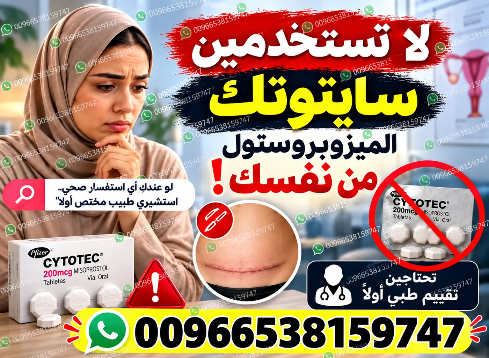
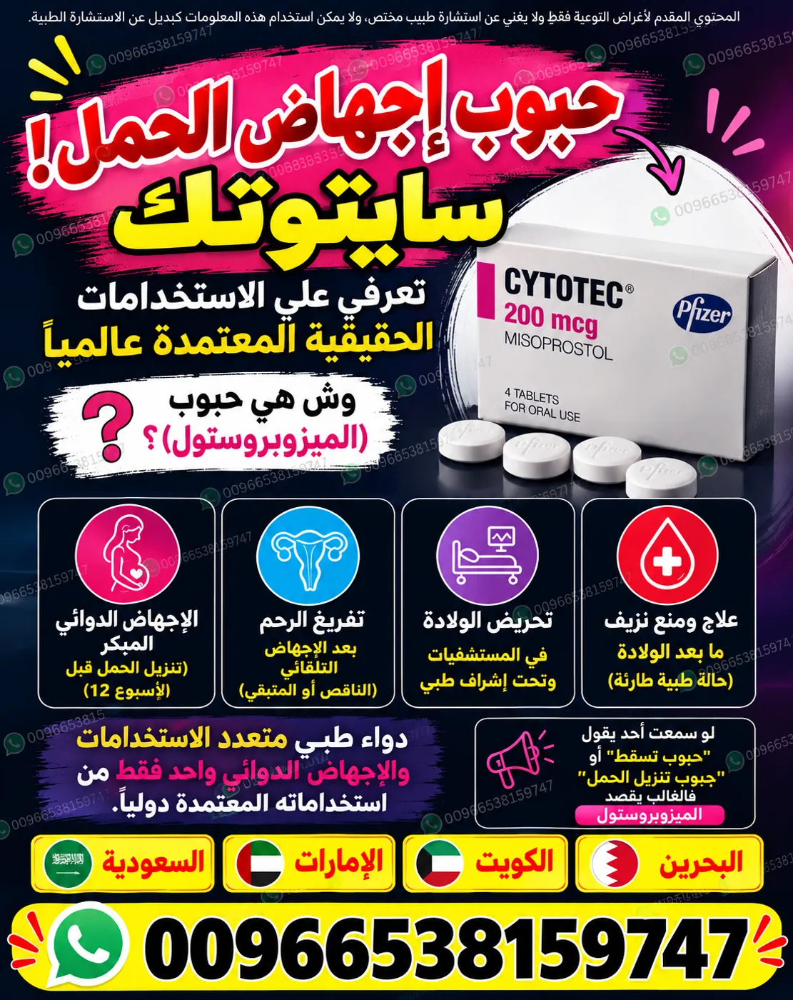
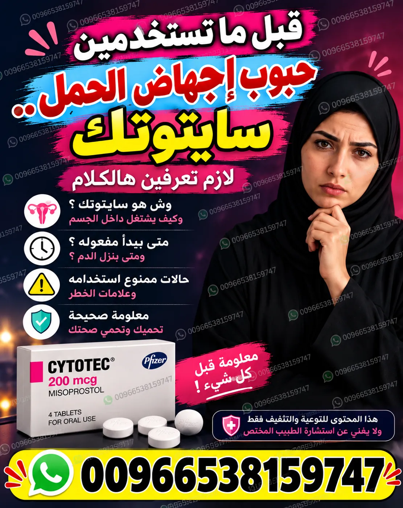
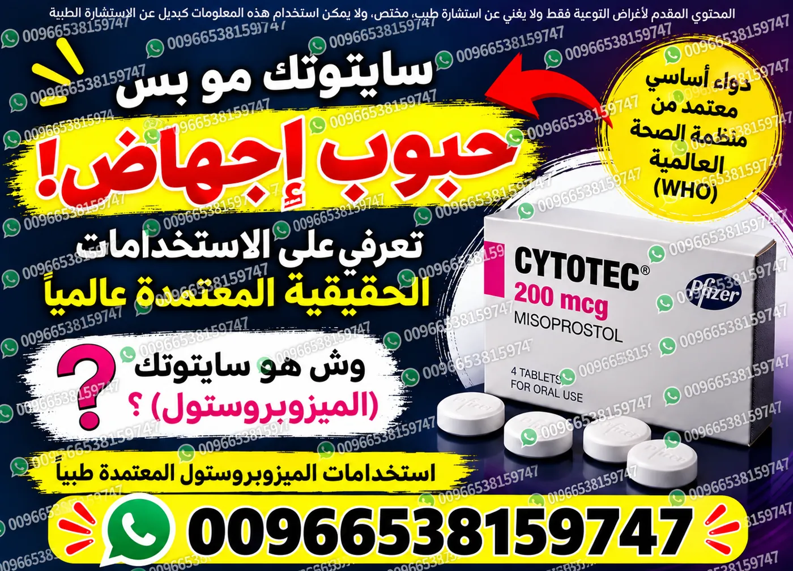

حبوب إجهاض الحمل: معلومات طبية
شرح المصطلحات الطبية العامة وحدود المعلومات المنشورة ومتى تكون مراجعة الطبيب ضرورية.
يقدّم SehaHer معلومات توعوية عن سايتوتك (Cytotec) وميزوبروستول (Misoprostol) ومصطلحات البحث المرتبطة بحبوب إجهاض الحمل، مع أدلة للمعلومات الصحية في السعودية والإمارات والكويت والبحرين وقطر وعُمان. تساعدك الصفحات على فهم المصطلحات ومراجعة مصادر المعلومات وأسئلة السلامة، لكنها لا تستبدل التقييم الطبي الفردي.
المعلومات المنشورة لا تمثل تشخيصًا أو وصفة فردية. تُراجع تفاصيل المنتج والتوفر وشروط الصرف من الصيدلية أو الجهة المرخصة في البلد المعني، مع الالتزام بمتطلبات الوصفة والتقييم الطبي حيثما تنطبق.
تعرّفي على الاسم التجاري والمادة الفعالة ومصادر التحقق، واقرئي المعلومات الطبية قبل اتخاذ أي قرار.

شرح المصطلحات الطبية العامة وحدود المعلومات المنشورة ومتى تكون مراجعة الطبيب ضرورية.

توضيح الفرق بين الاسم التجاري واسم المادة الفعالة، وأهمية التحقق من المنتج المحدد.

معلومات دوائية عامة ومصادر رسمية للرجوع إليها، دون وصف علاج شخصي.
دليل معلوماتي للباحثات في السعودية، مع روابط للمصادر الصحية المحلية وصفحات المدن. لا يعني وجود صفحة محلية أن خدمة طبية أو دواء متاح في المدينة.
قد تختلف الأنظمة وشروط تقديم الخدمات الصحية من دولة إلى أخرى. تحققي من المعلومات لدى الجهات الرسمية، واطلبي تقييمًا من ممارس صحي مرخص قبل اتخاذ أي قرار يتعلق بصحتك.
يمكنك الانتقال إلى الدليل العام أو اختيار صفحة المدينة للحصول على معلومات محلية وروابط ذات صلة.
افتحي دليل السعودية ←معلومات وروابط صحية محلية.
معلومات وروابط صحية محلية.
معلومات وروابط صحية محلية.
معلومات وروابط صحية محلية.
معلومات وروابط صحية محلية.
معلومات وروابط صحية محلية.

لا تعتمدي على منشورات التواصل أو الصور وحدها للتحقق من أصالة دواء أو ملاءمته. راجعي النشرة الرسمية والجهة التنظيمية في بلدك، واستشيري طبيبًا أو صيدليًا مرخصًا. لا تبدئي دواءً أو تغيّري طريقة استخدامه بناءً على محتوى الموقع.
اقرئي دليل سلامة الأدوية ←معلومات عامة عن الاسم التجاري والمصادر.
معلومات دوائية وسلامة الاستخدام.
معلومات عامة ومراجع طبية.
تصفحي مكتبة المقالات التوعوية.
إجابات عن الموقع والمعلومات وحدودها.
تعرفي على الدليل وسياسة المحتوى.
معلومات عامة عن الأعراض المحتملة وعلامات الخطر وطلب الرعاية الطبية.
شرح قراءة بيانات المنتج والنشرة والتحقق من التركيز والتسجيل.
كيف تتحقق من متطلبات الوصفة والأنظمة المحلية في كل دولة.
يمكنك التواصل عبر واتساب للاستفسار عن المعلومات المنشورة أو عن السعر والتوفر وشروط الصرف لدى الجهة الصيدلانية المختصة. تخضع أي عملية صرف للوصفة والمتطلبات النظامية في بلدك. لا تمثل الرسالة تشخيصًا أو وصفة طبية.
لخصوصيتك، لا ترسلي بيانات تعريفية أو صور تقارير طبية حساسة في الرسالة الأولى. عند وجود نزيف شديد أو ألم حاد أو دوخة شديدة أو إغماء، توجهي إلى الطوارئ المحلية فورًا ولا تنتظري ردًا عبر الإنترنت.
سايتوتك (Cytotec) اسم تجاري، وميزوبروستول (Misoprostol) هو اسم المادة الفعالة. تحققي من النشرة وبيانات المنتج المحدد لأن الاسم التجاري أو صورة العبوة وحدهما لا يكفيان لإثبات التسجيل أو الأصالة.
لا يمكن تعميم التوفر أو شروط الصرف على الدول الست. تختلف التسجيلات والاشتراطات والمخزون بحسب الدولة والمنتج والصيدلية. تحققي من الجهة التنظيمية والصيدلية المرخصة في البلد المعني قبل الاعتماد على أي إعلان.
يمكنك فتح الأدلة المحلية: السعودية، الكويت، الإمارات، البحرين، قطر، وسلطنة عُمان. تتضمن كل صفحة روابط للجهات الرسمية ذات الصلة.
لا. لا تحدد المقالات ملاءمة الدواء لحالة فردية ولا تقدم جرعات أو تعليمات استخدام. يجب الرجوع إلى النشرة المعتمدة والممارس الصحي المرخص، وطلب الرعاية العاجلة عند ظهور علامات خطر.
آخر تحديث تحريري: 12 نوفمبر 2026. لم يُسجل على هذه الصفحة ادعاء بمراجعة طبية مستقلة.
اختاري الموضوع الأقرب لسؤالك، وراجعي النشرة والمصادر الرسمية في بلدك.
المعلومات العامة والاستطبابات والتحذيرات.
التحذيرات وموانع الاستعمال وعلامات الخطر.
معلومات طبية عامة ومتى يلزم التقييم الطبي.
معلومات طبية ومصادر موثوقة دون تعليمات استخدام ذاتي.
علامات الخطر ولماذا يحتاج إلى تقييم عاجل.
الاستفسار حسب الدولة وبيانات الصيدلية المحدثة.